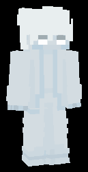

エクスレイ
# ティア
# 属性
# バリア獲得条件
# 使用中に反応するトリガー
# バフ
データベース
英語表記：Xray
特性肩書：障壁透視変化
壁貫通が許された唯一のウェポン。
アイテムを使用したときに、向いている方向へヴェックスを召喚する。
ヴェックスが接したブロックを中心に13x13x13の範囲が透視できるようになる。
透視が始まると、他のプレイヤーに警告が発せられ、その範囲は黒い枠で点滅する。
効果時間中は特殊な「エクスレイアロー」を装備し、全てのブロックを貫通する矢を放てるようになる。
なお、この矢は赤いパーティクルを纏い、0.75秒後に消滅する。
他のウェポンより長けている点は、不利な遮蔽越しの戦いで有利になる点。
クールダウン：15秒
効果継続時間：6秒
エクスレイアロー生存時間：0.75秒
擬態モデル
ウェポンページへ戻る